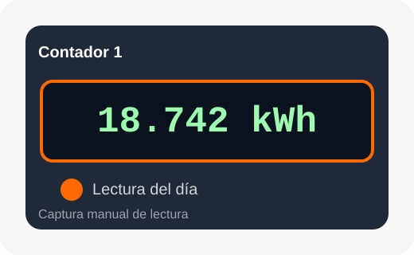
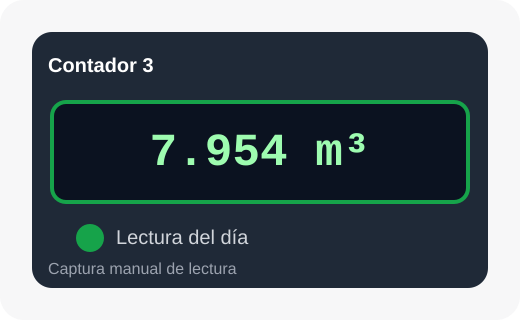

Lectura del contador · m³

Reducir el tiempo dedicado al reporting operativo Data4 mediante la automatización de la actualización de los Operation Books de DC01, DC02 y DC03.
Alcance del proyecto, stakeholders, CTQs, SIPOC y baseline inicial del proceso.
Operation Books DC01/DC02/DC03, inputs BMS e Iberdrola, mappings específicos y validaciones automáticas.
Otros CPDs, cambios en sistemas origen y subida final a plataformas del cliente.
| SUPPLIER | INPUT | PROCESS | OUTPUT | CUSTOMER |
|---|---|---|---|---|
| BMS | Export mensual | Importar | Operation Book | Data4 |
| Iberdrola | PDF / factura | Transformar | Validaciones | Serveo |
| App contadores | Lecturas | Mapear | Trazabilidad | Equipo Data4 |
| Plantillas OB | Hojas/celdas | Actualizar | Entrega mensual | Cliente |
Establecer una línea base objetiva y localizar dónde se concentra el esfuerzo manual antes de automatizar.
Pareto de horas: compilar Operation Book, extracción de datos, revisión de fallos y entrega.
Explicar por qué el proceso supera las 80 h y qué causas debe atacar la herramienta.
Ishikawa actualizado: método, sistemas/fuentes, datos, mappings, personas, medición y SLA.
Secuencia manual, copiar/pegar, revisión visual y recarga si hay errores.
BMS, Iberdrola, lecturas y plantillas sin flujo automatizado único.
Dependencia de perfiles expertos durante los primeros días del mes.
Exportaciones, PDFs, Excels y formatos distintos por edificio.
DC01, DC02 y DC03 requieren señales, hojas y celdas específicas.
Errores detectados tarde; retrabajo y poca trazabilidad automática.
Estos son los tres contadores de agua. Pide a los participantes que lean los valores y los escriban a mano en sus móviles, como si estuvieran tomando notas en campo.



Estabilizar las soluciones ya entregadas, corregir incidencias detectadas en uso real y reducir progresivamente el tiempo de revisión.
Corrección de mappings, fórmulas, señales y casos particulares detectados durante las primeras ejecuciones.
Alta de lecturas, adjuntos y sincronización operativa.
Consolidar el funcionamiento de DC01, DC02, DC03 y App Contadores hasta alcanzar un proceso recurrente con menos incidencias y menor revisión manual.
Incidencias, First Time Right, tiempo de revisión, corrección de mappings/fórmulas y cumplimiento del SLA en cada ejecución.
Extracción y compilación ya caen 91,1% y 98,7%, pero las primeras ejecuciones concentran 34 h 30 min/mes de revisión y corrección.
Cerrar errores, mappings, fórmulas, señales y excepciones detectadas en uso real para que cada nueva ejecución requiera menos intervención.
Reducir progresivamente la revisión, aumentar el FTR y acercar la reducción total al potencial ya demostrado por las tareas automatizadas.